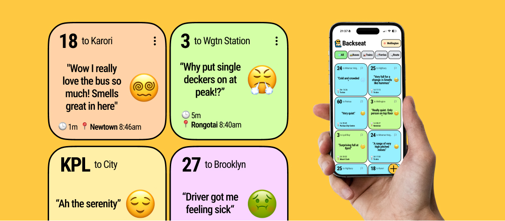

work




I'm Callum.
I design with empathy.
I build with chaos.
I got into design because I like things that look nice and feel great to use. That part hasn't changed. What has is realising the best outcomes rarely come from the tidiest process.
I follow threads, make leaps, and occasionally 3D print something at midnight. The work spans digital products, service design, and physical making — sometimes all at once.
I care about the people using what I make. The chaos is just how I get there.
I'm open to new roles in the CX, Service Design, or Product space, consulting, interesting opportunities.